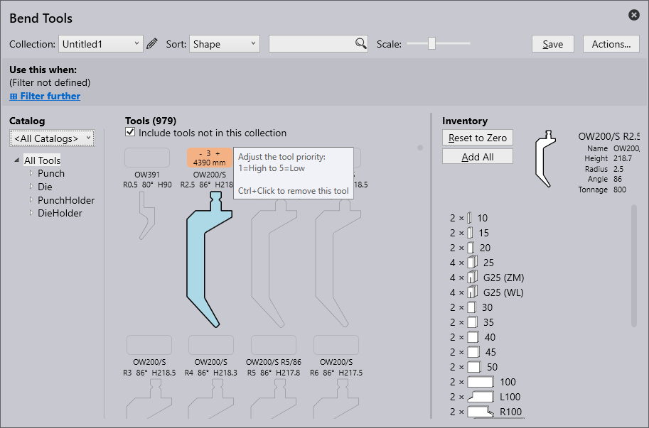
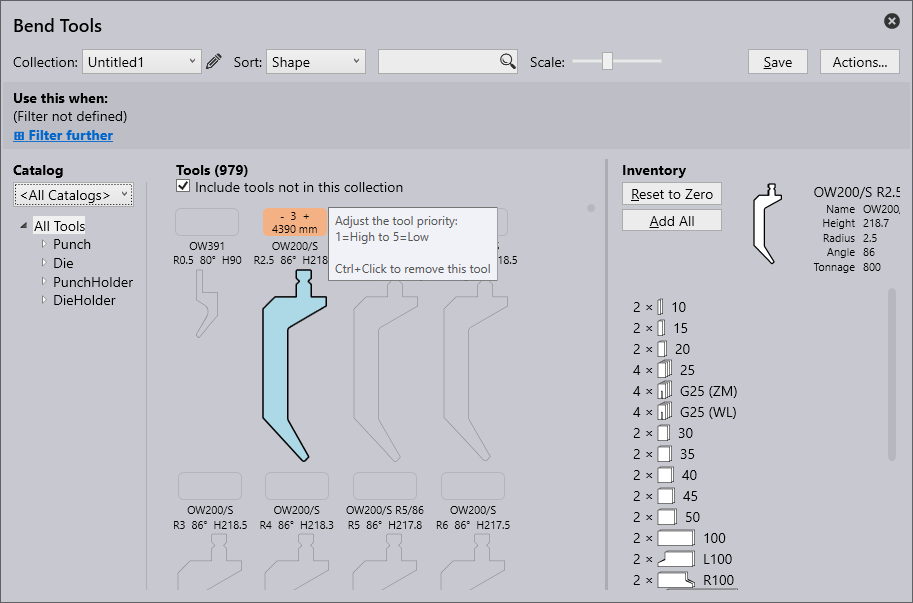

Bend 툴
벤딩 툴 생성에 사용되는 용어는 다음과 같습니다:
| S.No | 용어 | 의미 |
|---|---|---|
1 |
툴 리스트 |
작업할 툴 리스트는 여기에서 선택할 수 있습니다.새로운 툴 리스트는 새로 만들기 옵션으로 생성할 수 있습니다. |
2 |
정렬 |
여기에서 툴은 특정 기준에 따라 정렬할 수 있습니다(높이, 이름, 모양, 반경, 각도, 다이 폭, 우선순위, 툴 관리). |
3 |
검색 |
도구는 검색창을 사용하여 검색할 수 있습니다. 예를 들어, 툴 이름을 알파벳순으로 검색을 할 수 있습니다. 또한 더 복잡한 검색 요청이 가능합니다.이 검색 요청은 이름에 UT 또는 EV가 포함되고 다음 조건을 충족하는 모든 툴을 찾습니다: 각도 ≤ 30, 높이 ≥ 140, 높이 ≤ 220, 반경 = 1. |
4 |
크기 조절 |
툴의 보기 크기는 슬라이더를 사용하여 변경할 수 있습니다. |
5 |
작업 |
다음 작업을 수행할 수 있습니다: - A 카탈로그 추가: 다른 타입의 기계를 추가하기 위해. - B 새로운 툴 리스트: 새로운 툴 컬렉션을 만들기 위해. - C 툴 리스트 복제: 생성된 툴 모음을 복제하기 위해. - D 툴 리스트 내보내기: 현재 툴 리스트를".btools" 파일로 내보낼 수 있습니다. - E 툴 리스트 가져오기: 툴 리스트를 ".btools" 로 가져올 수 있습니다. - F ARV에서 가져오기: 툴을 ARV 파일에서 가져올 수 있으며, 이 툴은 툴 카탈로그에서 사용자 정의로 분류됩니다(이전에 사용할 수 없었던 경우 툴 카탈로그가 생성됩니다). - G DXF에서 가져오기: DXF 파일에서 툴을 가져올 수 있습니다. 이 툴은 툴 카탈로그에서 사용자 정의로 분류됩니다(이전에 사용할 수 없었던 경우 툴 카탈로그가 생성됩니다). - H 툴 리스트 재설정: 툴 리스트를 기본값 상태로 복원합니다. - I 취소: "작업…" 창을 닫습니다. |
6 |
툴 관리 |
선택한 툴의 개요를 보여줍니다.다음 작업을 수행할 수 있습니다: - 0으로 재설정: 선택한 툴의 전체 재고는 현재 툴 리스트에서 제거됩니다. - 한 세트 추가: 선택한 툴 중 한 세트만 현재 리스트에 추가됩니다. -길이 추가: 툴 길이를 추가하기 위해 - 모두 추가: 선택한 툴의 전체 재고가 현재 툴 리스트에서 로드됩니다. 재고는 <모든 툴> 툴 목록에 정의됩니다. - 저장: 적용된 변경 내용을 저장하기 위해. |
7 |
툴 재고 |
선택한 툴의 재고를 표시합니다.마우스 왼쪽 버튼을 클릭하여 세그먼트를 추가합니다. |
8 |
재고가 없는 툴 |
재고가 없는 툴은 현재 툴 리스트에 포함되지 않습니다. 빈 필드를 클릭하면 해당 툴에 대한 표준 재고가 추가되고 해당 툴이 현재 툴 리스트에 포합됩니다. |
9 |
우선순위 |
사용자가 지정한 우선순위에 따라 툴이 선택됩니다. 1 = 우선순위가 높은 툴 5 = 우선순위가 낮은 툴 |
10 |
툴 이미지 영역 |
툴 이미지 영역에 선택한 툴 리스트의 모든 툴이 표시됩니다. 재고가 없는 툴은 "재고 없는 툴 포함" 체크박스를 통해서도 표시될 수 있습니다. |
11 |
툴 필터 |
여기서는 현재 툴 리스트의 툴들이 타입과 모양에 따라 구조화됩니다.이 구조에서 요소를 선택하면 필터링이 가능합니다. |
12 |
카탈로그 |
이를 통해 설치된 여러 툴 카탈로그 중 하나를 선택할 수 있습니다(TRUMPF, 사용자 정의 등 포함). |
13 |
필터 조건 |
자동 툴러에 의해서 자동으로 사용되는 현재 툴 리스트에 대한 필터 조건입니다. 이것은 명명된 툴 리스트에는 사용할 수 있지만, 특수 리스트 <모든 툴>에는 사용할 수 없습니다. 기계, 재료, 시트. 두께 등을 포함한 다양한 측면에 따라 필터링이 가능합니다. |
툴 리스트 만들기
-
새 툴 리스트를 만들려면 작업 버튼을 클릭하고 새 툴 리스트 를 선택합니다.

-
편집 아이콘을 클릭하여 툴 리스트의 이름을 바꿉니다.
-
기본적으로 새 툴 리스트에는 펀치, 다이, 펀치 홀더 및 다이 홀더를 포함한 모든 툴이 표시되지만, 재고에 추가되지 않았습니다. 이 컬렉션에 없는 툴 포함 체크박스가 선택되어 있는지 확인합니다.

-
툴을 추가하려면 툴 이름 위에 있는 정사각형 상자를 클릭하고 ctrl+enter 키를 눌러 툴을 제거합니다.
 

-
다음 경우에 사용 옵션을 사용하면 사용자가 다양한 기준에 따라 새 리스트에 대한 가공 기준을 필터링하고 설정할 수 있습니다.
-
이 툴 리스트를 컬렉션 에 추가하려면 저장 을 클릭합니다.
툴 리스트에 대한 가공 기준 추가하기
다양한 필터 기준으로부터 가공 기준을 적용하려면 추가 필터링 옵션을 클릭합니다.
-
기계 - 벤딩과정에 사용되는 기계를 말합니다.
-
재료 - 벤딩되는 재료의 종류를 나타냅니다.
-
두께 - 벤딩는 재료의 두께를 나타냅니다.
-
반경 - 벤딩부의 곡률을 나타냅니다.
-
표면 - 재료의 외부 질감이나 마감을 설명합니다.
-
처리 - 열처리, 코팅 또는 아연 도금과 같이 재료에 적용되는 벤딩 전 또는 벤딩 후 공정을 설명합니다.
-
필름 - 재료에 적용되는 보호 또는 기능성 층을 말한다.
-
태그 - 더 쉽게 식별할 수 있도록 요소를 분류, 필터링 및 구성하는 데 지정된 사용자 정의 레이블입니다.
| 툴 리스트에 필터링 기준이 하나 이상 있어야 저장할 수 있습니다(그렇지 않으면 이 툴 리스트가 모든 파트에 사용됩니다). |

아래 이미지는 가공 기준 생성에 적용된 예를 보여줍니다:
| 여러 툴 리스트가 특정 툴 요구사항과 일치하는 경우, 가장 구체적으로 일치하는 툴 리스트가 사용됩니다. |